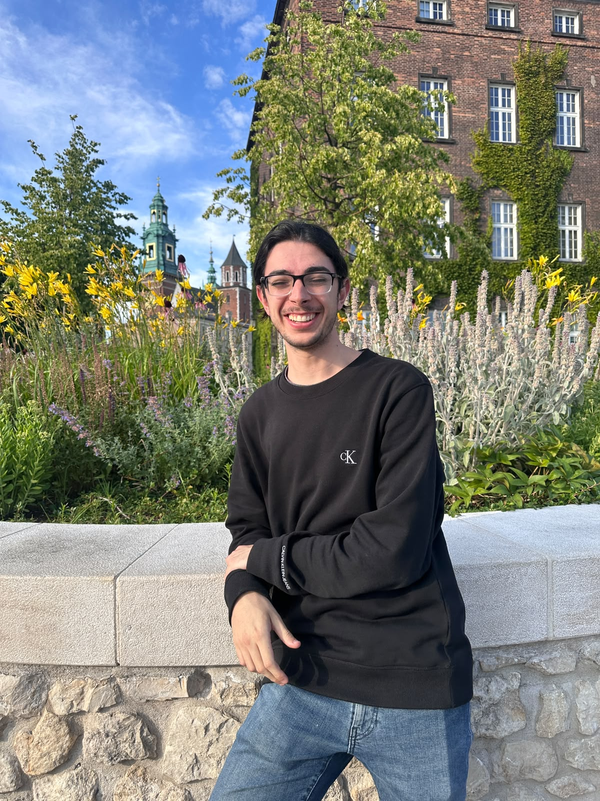

I am a PhD student at ICMAT with an FPU2024 fellowship, under the supervision of Manuel de León. Below you can find a quick summary of my rearch interests (for a more in-depth version, press the Research button above):
- Multisymplectic and associated geometric formulations of classical field theories.
- Coisotropic embeddings and regularization.
- Symmetries and associated Noether charges.
- Darboux, or flatness, theorems.
Below you can find a summary of my (so far short) academic career:
- I obtained my undergraduate degree in Mathematics at the Universidad Complutense de Madrid in 2023, with an average grade of 9.44/10. My bachelor’s thesis, Homología Singular y Celular, is available as text and slides.
- I completed my master’s degree in Advanced Mathematics at the same university in 2024, with an average grade of 9.77/10. My master’s thesis, Coisotropic Reduction in Multisymplectic Geometry, is available as text and slides.
- I am currently pursuing my PhD at ICMAT and UAM.
Relevant links